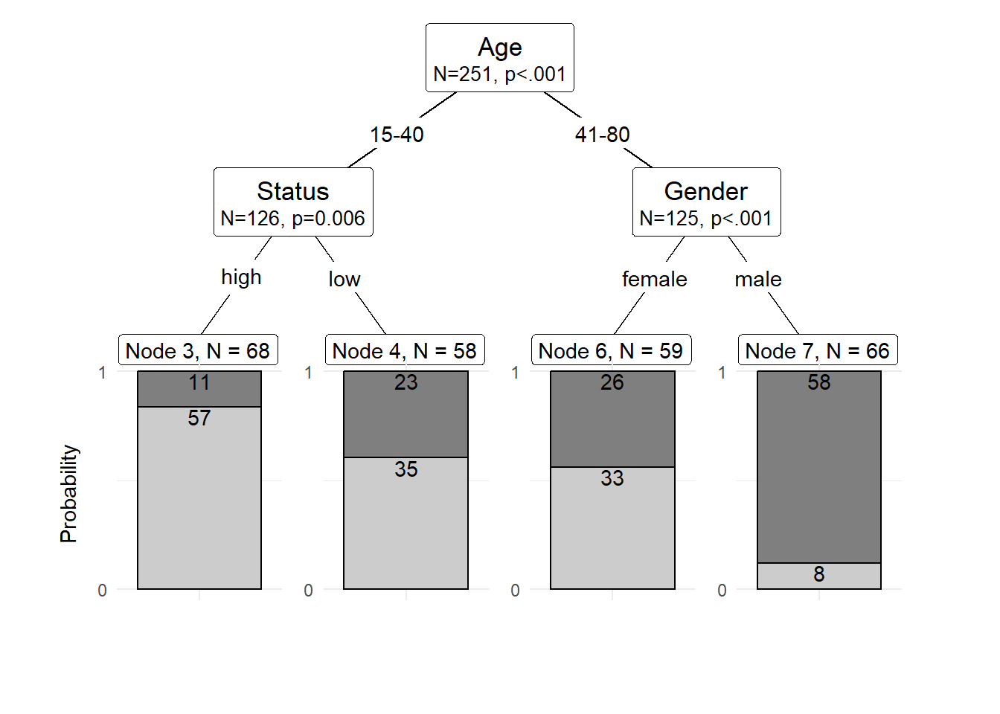
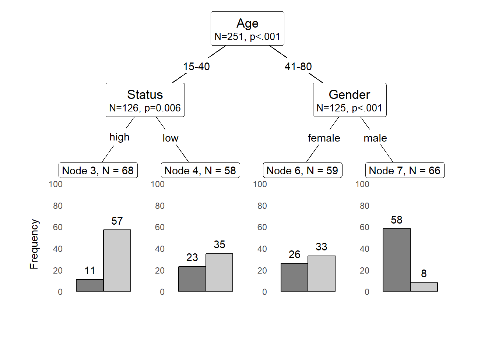

Session 2 Conditional Inference Trees
Conditional Inference Trees (CITs) are much better at determining the true effect of a predictor, i.e. the effect of a predictor if all other effects are simultaneously considered. In contrast to CARTs, CITs use p-values to determine splits in the data. Below is a conditional inference tree which shows how and what factors contribute to the use of discourse like. In conditional inference trees predictors are only included if the predictor is significant (i.e. if these predictors are necessary).
citdata <- read.delim("https://slcladal.github.io/data/treedata.txt", header = T, sep = "\t")
set.seed(111) # set.seed
# apply bonferroni correction (1 minus alpha multiplied by n of predictors)
control = ctree_control(mincriterion = 1-(.05*ncol(citdata)-1))
# convert character strings to factors
citdata <- citdata %>%
dplyr::mutate_if(is.character, factor)
# create initial conditional inference tree model
citd.ctree <- partykit::ctree(LikeUser ~ Age + Gender + Status,
data = citdata)
plot(citd.ctree, gp = gpar(fontsize = 8)) # plot final ctree
Prettifying your CIT tree
The easiest and most common way to visualize CITs is to simply use the plot function from base R. However, using this function does not allow to adapt and customize the visualization except for some very basic parameters. The ggparty function allows to use the ggplot syntax to customize CITs which allows more adjustments and is more aesthetically pleasing.
To generate this customized CIT, we activate the ggparty package and extract the significant p-values from the CIT object. We then plot the CIT and define the nodes, edges, and text elements as shown below.
# extract p-values
pvals <- unlist(nodeapply(citd.ctree, ids = nodeids(citd.ctree), function(n) info_node(n)$p.value))
pvals <- pvals[pvals <.05]
# plotting
ggparty(citd.ctree) +
geom_edge() +
geom_edge_label() +
geom_node_label(line_list = list(aes(label = splitvar),
aes(label = paste0("N=", nodesize, ", p",
ifelse(pvals < .001, "<.001", paste0("=", round(pvals, 3)))),
size = 10)),
line_gpar = list(list(size = 13),
list(size = 10)),
ids = "inner") +
geom_node_label(aes(label = paste0("Node ", id, ", N = ", nodesize)),
ids = "terminal", nudge_y = -0.0, nudge_x = 0.01) +
geom_node_plot(gglist = list(
geom_bar(aes(x = "", fill = LikeUser),
position = position_fill(), color = "black"),
theme_minimal(),
scale_fill_manual(values = c("gray50", "gray80"), guide = FALSE),
scale_y_continuous(breaks = c(0, 1)),
xlab(""),
ylab("Probability"),
geom_text(aes(x = "", group = LikeUser,
label = stat(count)),
stat = "count", position = position_fill(), vjust = 1.1)),
shared_axis_labels = TRUE)
We can also use position_dodge (instead of position_fill) to display frequencies rather than probabilities as shown below.
# plotting
ggparty(citd.ctree) +
geom_edge() +
geom_edge_label() +
geom_node_label(line_list = list(aes(label = splitvar),
aes(label = paste0("N=", nodesize, ", p",
ifelse(pvals < .001, "<.001", paste0("=", round(pvals, 3)))),
size = 10)),
line_gpar = list(list(size = 13),
list(size = 10)),
ids = "inner") +
geom_node_label(aes(label = paste0("Node ", id, ", N = ", nodesize)),
ids = "terminal", nudge_y = 0.01, nudge_x = 0.01) +
geom_node_plot(gglist = list(
geom_bar(aes(x = "", fill = LikeUser),
position = position_dodge(), color = "black"),
theme_minimal(),
theme(panel.grid.major = element_blank(),
panel.grid.minor = element_blank()),
scale_fill_manual(values = c("gray50", "gray80"), guide = FALSE),
scale_y_continuous(breaks = seq(0, 100, 20),
limits = c(0, 100)),
xlab(""),
ylab("Frequency"),
geom_text(aes(x = "", group = LikeUser,
label = stat(count)),
stat = "count",
position = position_dodge(0.9), vjust = -0.7)),
shared_axis_labels = TRUE)
Problems of Conditional Inference Trees
Like other tree-based methods, CITs are very intuitive, multivariate, non-parametric, they do not require large data sets, and they are easy to implement. Despite these obvious advantages, they have at least one major short coming compared to other, more sophisticated tree-structure models (in addition to the general issues that tree-structure models exhibit as discussed above: they are prone to overfitting which means that they fit the observed data very well but preform much worse when being applied to new data.
An extension which remedies this problem is to use a so-called ensemble method which grows many varied trees. The most common ensemble method is called a Random Forest Analysis and, unfortunately, we cannot deal with random forests here (but if you are interested, check out this tutorial).